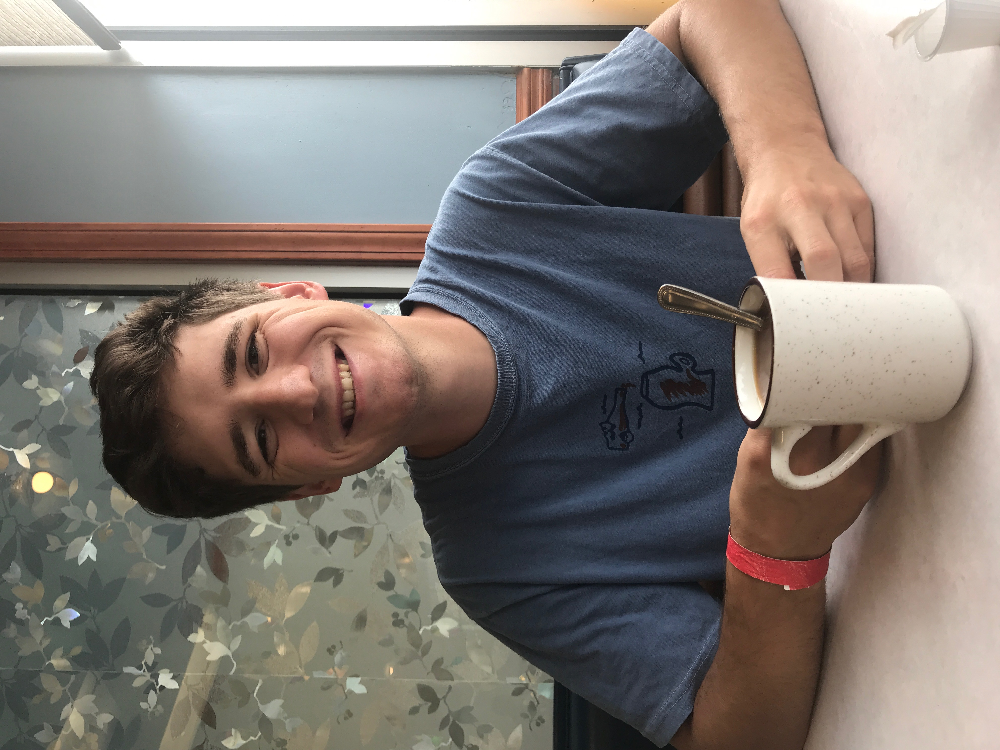

Who are we?
We are students at the University of Toledo, implementing sustainable composting and energy production within the university and community.
Team Members:
Thomas Young:
A senior in the Environmental Engineering Department and pursuing a career in the water and wastewater treatment field. The team leader for this project.

Emily Briese:
Sarah Kelly:
What is the GreenBox?
The GreenBox is a portable unit that collects, weighs, and stores food waste. The system is will be implemented on campuses and arounf the community. It will allow the customer to interact with it and get updates in real time.

Why are we developing the GreenBox?